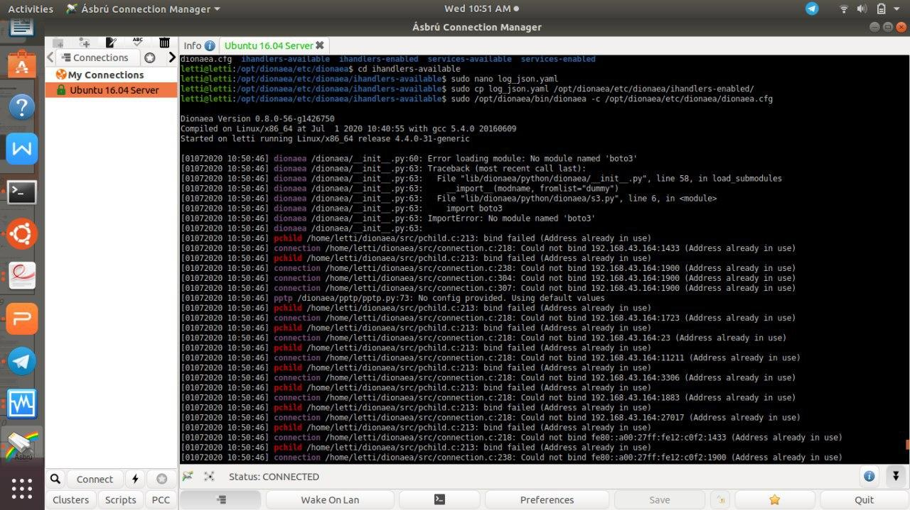

Installation¶
Install Dependencies¶
Sebelum menginstall dionaea ada beberapa hal yang harus dipersiapkan berikut adalah perintah-perintah yang harus dilakukan dalam menginstall dionaea :
$ sudo apt update
$ sudo apt install git
$ sudo apt install aptitude
$ sudo apt install net-tools
$ sudo apt install sqlite3
$ git clone https://github.com/DinoTools/dionaea.git
$ sudo apt install \
build-essential \
check cmake \
cython3 \
libemu-dev \
libev-dev \
libglib2.0-dev \
libloudmouth1-dev \
libnetfilter-queue-dev \
libnl-3-dev \
libpcap-dev \
libssl-dev \
libtool \
libudns-dev \
python3 \
python3-dev \
python-bson \
python3-yaml
$ sudo aptitude -f install libcurl4-openssl-dev
Install Dionaea¶
Setelah persiapan tersebut sekarang adalah menginstall dionaea.
$ cd dionaea
$ mkdir build
$ cmake -DCMAKE_INSTALL_PREFIX:PATH=/opt/dionaea ..
$ make
$ make install
Dengan demikian, dionaea telah berhasil diinstall. Berikut ialah dokumentasi ketika Dioanea berhasil diinstall pada ubuntu 16.04.
{kind=link}
Update the Dionaea Config¶
Setelah menginstall Dionaea sebelum dilanjutkan, kita perlu membuat beberapa perubahan konfigurasi. Dionaea memiliki beberapa masalah dengan IPv6 dan juga cukup bertele-tele dalam log-nya dengan konfigurasi default jadi edit file konfigurasi. Berikut ialah cara untuk mengupdate konfigurasi Dionaea.
$ vi /opt/dionaea/etc/dionaea/dionaea.cfg
Kemudian, ubah konfigurasi sebagai berikut, yaitu dengan mengubah variabel yang diinginkan.
listen.mode=manual
listen.addresses=<ip address of the host>
default.levels=warning,error
errors.levels=warning,error
Mengidentifikasi Malware¶
Agar dionaea dapat melakukan deteksi jenis virus dan dapat mengidentifikasinya menggunakan virus total, lakukan pengaturan terlebih dahulu pada bagian virustotal.yaml.
$ cd /opt/dionaea/etc/dionaea/ihandlers-avaiable
$ nano virustotal.yaml
Maka akan muncul tampilan sebagai berikut :
-name: virustotal
config:
# grab it from your virustotal account at My account -> My API Key (https://www.virustotal.com/en/user/<username>/apikey/)
apikey: "........."
file: "@DIONAEA_STATEDIR@/vtcache.sqlite"
# comment: "This sample was captured in the wild and uploaded by the dionaea honeypot.\n#honeypot #malware #networkworm"
Lakukan perubahan pada isi apikey dengan API key akun virus total yang ingin digunakan. Simpan pengaturan tersebut.
Masuk ke direktori ihandlers-enabled dengan perintah berikut
$ cd /opt/dionaea/etc/dionaea/ihandlers-enabled
Salin file virustotal.yaml yang telah diubah sebelumnya dengan perintah :
$ ln -s ../ihandlers-available/virustotal.yaml virustotal.yaml
Setelah langkah tersebut dilakukan maka malware yang tertangkap oleh dionaea dapat diidentifikasi dengan melalui virustotal.